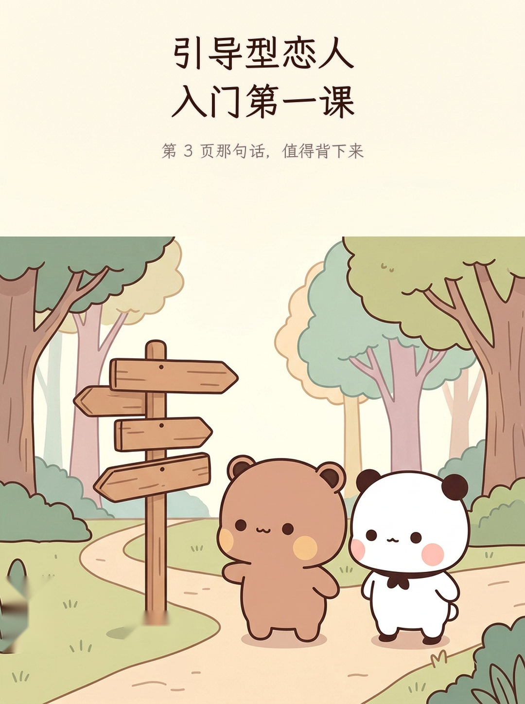
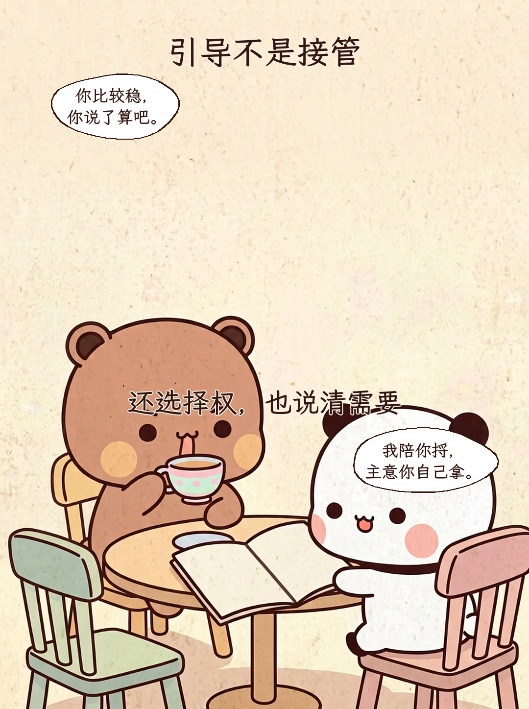
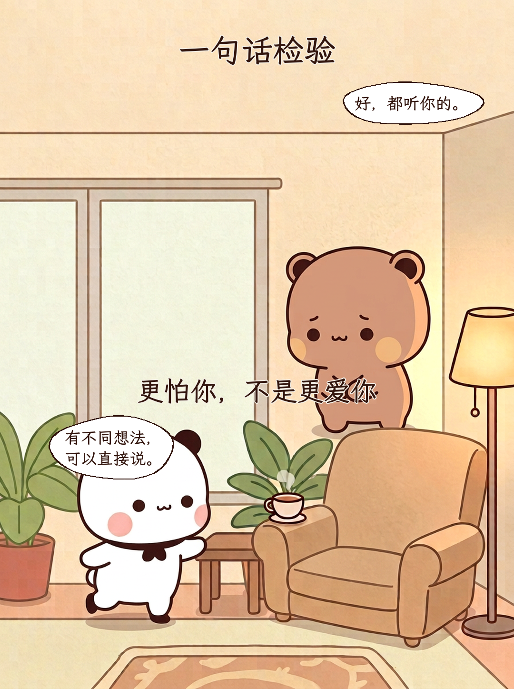
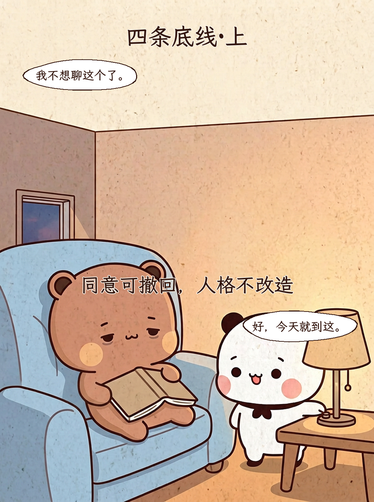
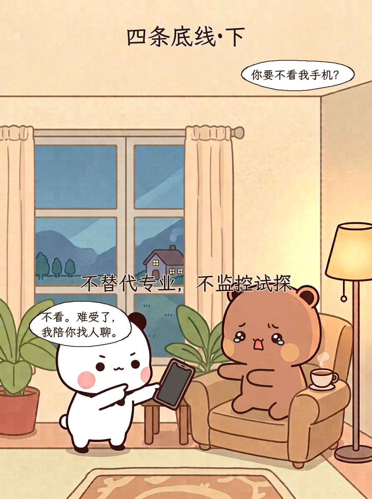
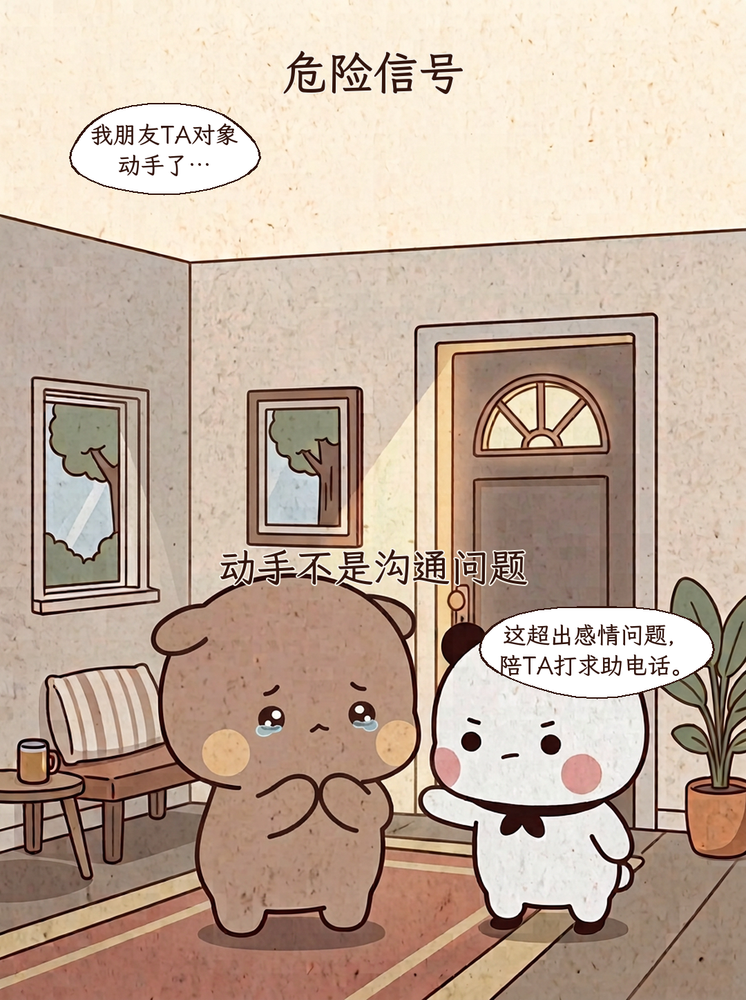
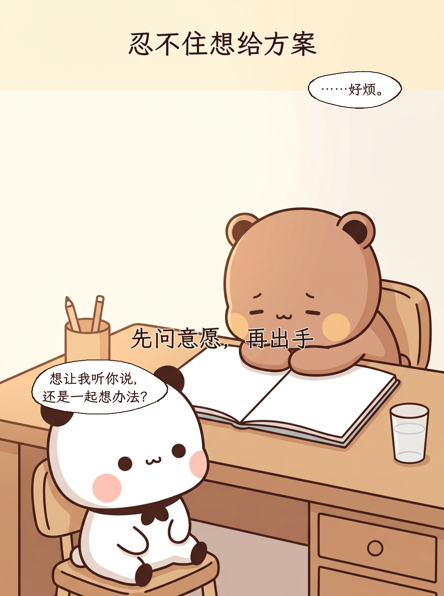
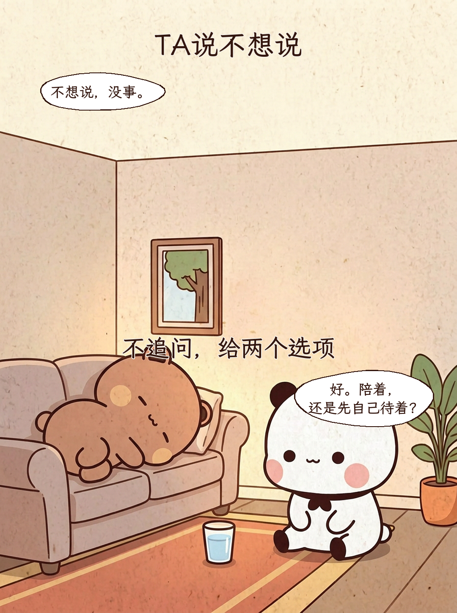
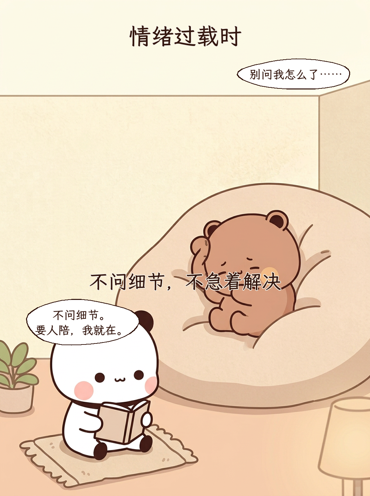
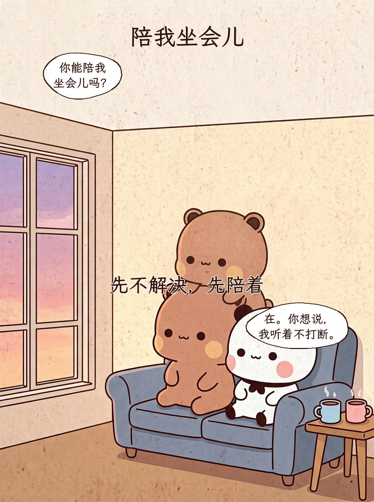

引导型恋人 入门第一课
第 3 页那句话，值得背下来

引导不是接管
还选择权，也说清需要
你比较稳， 你说了算吧。 / 我陪你捋， 主意你自己拿。
一句话检验
更怕你，不是更爱你
好，都听你的。 / 有不同想法， 可以直接说。
四条底线·上
同意可撤回，人格不改造
我不想聊这个了。 / 好，今天就到这。
四条底线·下
不替代专业，不监控试探
你要不看我手机？ / 不看。难受了， 我陪你找人聊。
危险信号
动手不是沟通问题
我朋友TA对象 动手了… / 这超出感情问题， 陪TA打求助电话。
忍不住想给方案
先问意愿，再出手
……好烦。 / 想让我听你说， 还是一起想办法？
TA说不想说
不追问，给两个选项
不想说，没事。 / 好。陪着， 还是先自己待着？
情绪过载时
不问细节，不急着解决
别问我怎么了…… / 不问细节。 要人陪，我就在。
陪我坐会儿
先不解决，先陪着
你能陪我 坐会儿吗？ / 在。你想说， 我听着不打断。